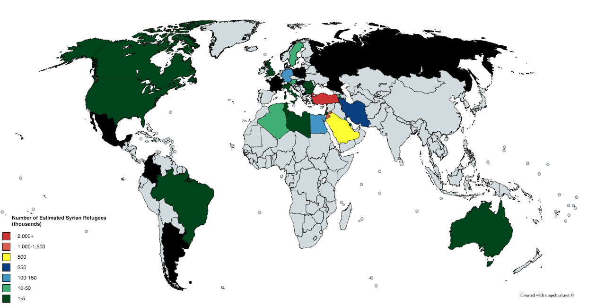

Our project investigates the international response to the Syrian refugee crisis, comparing actions to words. And referring back to a Syrian proverb that read “yali eido bil may, mu metl eli eido bl nar” and translates loosely to: “He whose hand is in water, doesn’t compare to that whose hand is in fire”. In other words, is it true that countries doing the heavy lifting are those talking about the crisis the least? And vis-versa.
In April 15 2011, a revolution broke out in southern Syria, and shortly after it spread to the rest of the country. By mid June, the government military crackdown on the demonstrations had resulted in the first wave of displacement internally and externally from Syria into neighboring countries starting what we know today as the Syrian Refugee Crisis. The biggest forced migration in the history of the region, and largest population movement since WWII.

Starting April 15 2011, the world map has changed, and continues to change, to Syrians fleeing the war, just like it changed to a Syrian-Passport holder. The refugee crisis has sparked reactions all across world, specially in Europe and North America, as it was often coupled with more than just the humanitarian aspect, to become a political topic around inclusion and foreign policy for many countries.

Using data on admission of refugees and asylum seekers numbers per country, we redraw the map of the world from a Syrian refugee perspective. Which countries are bigger, more likely to accept a Syrian refugee. All while comparing to the media coverage generated around the topic of refugees. While this is difficult to accurately plot, the topic of Syrian refugees vary in frequency from one country’s media to another and the argument can be made for a mutually exclusive relation between the two.
Word Cloud outcome from GDELT on articles mentioning Syrians and Refugees in 14 selected languages
http://data.gdeltproject.org/analytics_user/20170412191901.4451.wordcloud.png
UNHCR Data
Source: http://popstats.unhcr.org/en/persons_of_concern
Downloaded: April 5th, 2017
Country of Origin: Syria
Year: 1968 - 2015
GDELT Data
The GDELT project, supported by Google Jigsaw, monitors the world's broadcast, print, and web news from nearly every corner of every country in over 100 languages. It is the largest, most comprehensive, and highest resolution open database of human society ever created.
Source: http://www.gdeltproject.org/